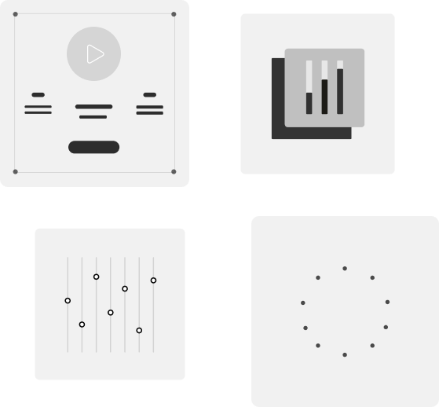
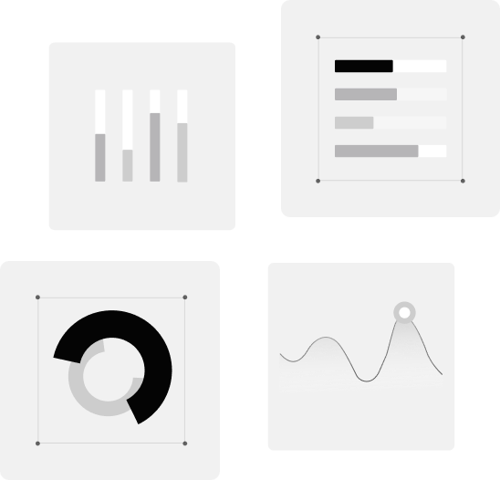
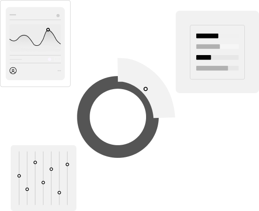
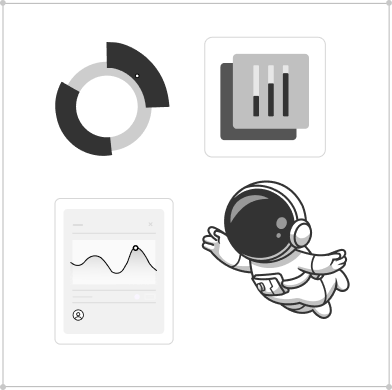

研究与实践方向
我关注 AI Agent 的任务分解、工具调用、多智能体协作，以及大规模群决策中的评价、 聚合和协同机制。同时也通过 Web 项目训练前端实现、交互设计和部署能力。
About
我目前围绕智能体系统、群体决策机制和 Web 工程实践持续学习， 希望把科研理解和工程实现结合起来，沉淀为可复用的项目与文章。
我关注 AI Agent 的任务分解、工具调用、多智能体协作，以及大规模群决策中的评价、 聚合和协同机制。同时也通过 Web 项目训练前端实现、交互设计和部署能力。
Focus
围绕研究、开发和复现三个角度搭建自己的技术体系。

关注智能体系统的任务规划、工具调用、记忆机制和多智能体协作。

研究群体偏好表达、决策聚合、共识达成和复杂系统协同问题。

使用 HTML、CSS 和原生 JavaScript 构建清晰、快速、易部署的静态页面。
